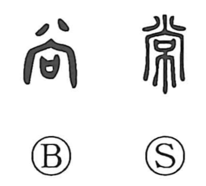

常

Kun: tsune, tsuneni, toko | On: jo
constant ・ usual ・ always ・ standard ・ rule ・ everlasting
Explanation
常 is a phono-semantic character built on 尚 as its phonetic, with the cloth element 巾 added. The Shuowen glosses 尚 as the lower train of a garment, linking the composite form to the trailing hem (裳). In bronze inscriptions, 尚 already appears with the sense of constancy, as in the line 必尚卑厥處邑, meaning let him always dwell in his village. From the notion of a garment’s train whose length is fixed by rule, the character took on the ideas of standard and norm, which then broadened into temporal senses such as habitual, usual, and always. It can also stand in for 嘗 with the meaning once, and in Japanese it includes the reading toko in words like 常夏, everlasting summer.